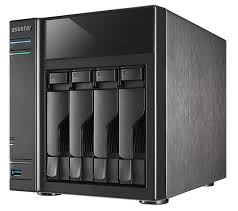
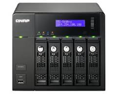

Cos'è NAS


Un Network Attached Storage (NAS) è un dispositivo collegato ad una rete di computer la cui funzione è quella di condividere tra gli utenti della rete
una memoria di massa, in pratica costituita da uno o più dischi rigidi.
Vantaggi
I vantaggi offerti dai NAS sono molteplici. Innanzitutto un NAS permette di centralizzare l'immagazzinamento dei dati in un solo dispositivo accessibile a tutti i nodi della rete, altamente specializzato per le prestazioni; quindi un NAS permette di implementare schemi RAID (Redundant Array of Independent Disks), i quali garantiscono una migliore gestione della sicurezza dei dati. Normalmente un NAS consente l'eventuale rimozione ed aggiunta di dischi "a caldo"
(hot swap), senza la necessità di disattivare l'unità.